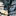
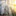
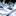
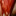

c0  |
INFRARED
Washington State, 2007
Exhibited at Eastern Washington University Gallery, Cheney, WA, 2007
VIEW
|
| |
|
 |
|
|
| c2  |
CONTEMPORARY LANDSCAPES
Washington State, 2005
Exhibited at Moses Lake Museum and Art Center, Moses Lake, WA, 2005
A site-specific exhibition of the Moses Lake landscape, painted remotely from Internet satellite images.
VIEW
|
|
|
| c3 |
WAKO WO KOETE
Washington State, 2004
Exhibited at White Gallery, Kagoshima, Japan, 2004
Paintings on PVC roofing material of images, primarily of the Middle East from where I had recently returned, clipped out of my rural Washington hometown newspaper during the summer of 2004.
VIEW
|
|
|
| c4  |
CRIMSON
Cairo, Egypt,
2002
Exhibited at Townhouse Gallery, Cairo, Egypt, 2002
Paintings and sculptures exploring the fine line between the exquisite and the horrific.
VIEW
|
|
|
| c5  |
INSIDE LOOKING OUT
Pretoria, South Africa/Cairo, Egypt,
2001
Exhibited at American University in Cairo, Egypt, 2001
Landscapes of Pretoria and Cairo painted from direct observation through colored and patterned glass.
VIEW
|
|
|
| c6 |
MEDITATIONS ON AESTHETICS
Cairo, Egypt/Rome, Italy 1999-2000
Exhibited at American Academy in Rome, Rome, Italy 1999,
Townhouse Gallery, Cairo, Egypt, 2000,
Gezira Art Center and Museum, Cairo, Egypt, 2000, Broward County Community College, 2003
Abstract and literal at the same time, these paintings take an unflinching look at the detritus found on the streets of Cairo, subjects inherently disturbing or unpleasant but having exquisite formal and aesthetic values.
VIEW
|
|
|
| c7  |
SCROLLS
Fort Collins, CO,
1998
Exhibited at Lincoln Center for the Performing Arts Gallery, Fort Collins, 1998, Colorado State University Directions Gallery, Fort Collins, 1998, Gezira Art Center and Museum, Cairo, Egypt, 2000
Large paintings, made from a process of staining unprimed, un-stretched canvases, exploring traditional Japanese formal and philosophical concerns.
VIEW
|
|
|
| c8 |
SCREENS AND SCULPTURAL PAINTINGS
Fort Collins, Colorado, 1997-1998
Exhibited at Hatton Gallery, Colorado State University, Fort Collins, CO 1998
Large scale screens and sculpturally installed landscape paintings exploring combinations of form and aesthetics from American and Japanese inspiration.
VIEW
|
|
|
|
|
|